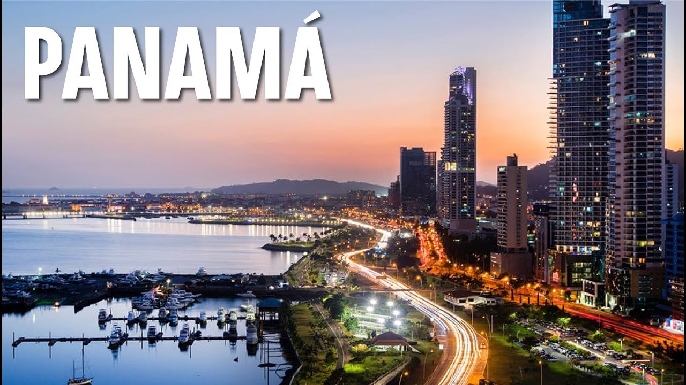
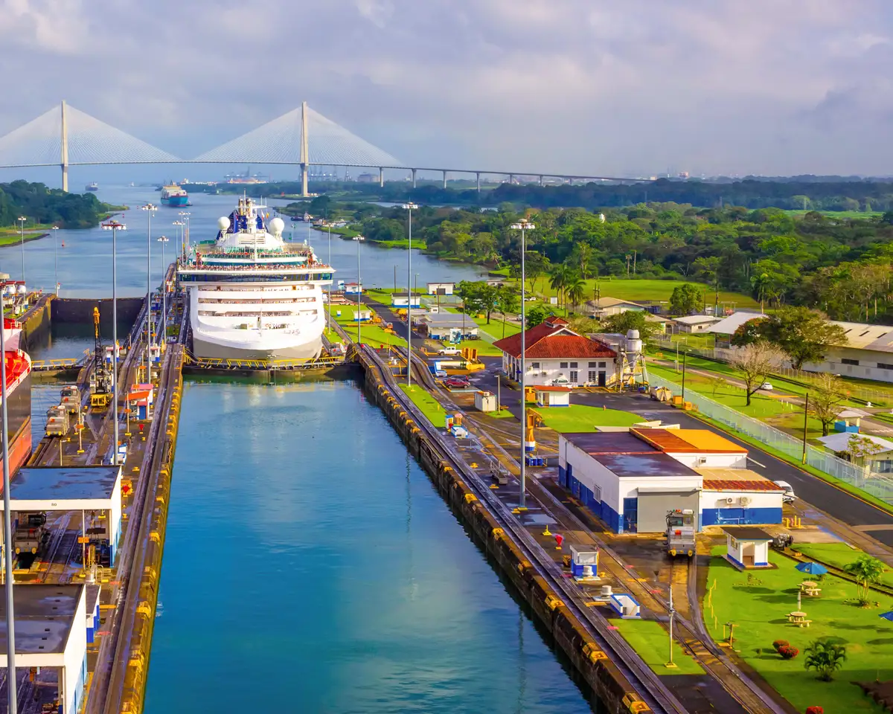
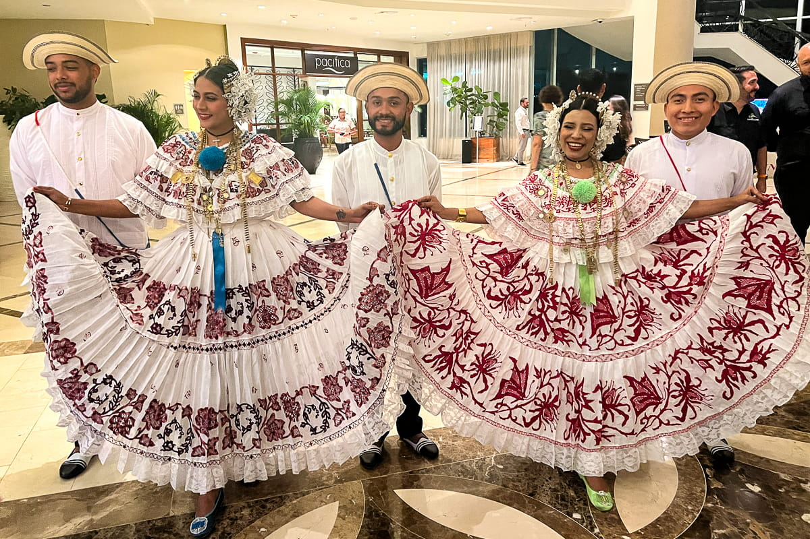

Paisaje sublime

Atravesado por un canal que ha convertido en su icono y símbolo, Panamá ha sabido mantener una idiosincrasia esculpida desde la mezcla, la diversidad y el intercambio. El viajero lo divisa antes de aterrizar. Y entiende, desde la panorámica que ofrece la ventanilla del avión, que se aproxima a un pequeño gran mundo.
Panamá ofrece una combinación única de naturaleza exuberante y modernidad, con selvas tropicales, playas en dos océanos y una capital cosmopolita a solo minutos de distancia entre sí.
Top 5 lugares para visitar

- El Canal de Panamá
- San Blas
- Parque Nacional Soberanía
- La Villa de los Tamarindos
- Playa de la Arena
Para conocer más sobre uno de sus atractivos más famosos, puedes visitar el sitio oficial del Canal de Panamá (enlace externo).
Cultura rica

Panamá es un país lleno de contrastes y diversidad, donde se puede disfrutar de playas espectaculares, paisajes exuberantes y una rica cultura. Su economía en crecimiento y su ubicación estratégica lo convierten en un destino atractivo para inversionistas y turistas de todo el mundo.
- Tradiciones indígenas
- Festivales y celebraciones
- Arte y música local
- Cocina típica
- Arquitectura colonial
Glosario cultural
- Pollera
- Traje típico femenino panameño, considerado uno de los más elaborados de Latinoamérica.
- Tamborito
- Danza folclórica nacional acompañada de tambores y cantos tradicionales.
- Mola
- Arte textil elaborado por el pueblo indígena Guna, hecho con capas de tela cosidas a mano.